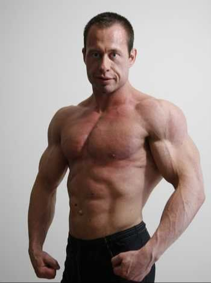

If YOU FEEL that WARM-UP SETS aren't required to execute that exercise safely, then jump straight into the working load, do your WORKING SET + MYOREPS
I only apply this when it comes to isolation/machines/cables/just your bodyweight (no added weight) exercises.
Example: Last workout, Smith Machine Bench Press, 8 REPS, 60KG (workload)
1 WARM-UP SET: 50% workload (30kg), 8 REPS
2 WARM-UP SET: 75% workload (45kg), 4 REPS
3 WARM-UP SET: 100% Workload (60kg), 2 REPS
REST; START WORKING SET + MYO REPS
Rest as long as you need! The goal isn't to fatigue you, it's to make you READY for the heavy work!
*(remember, safety is your N1 priority, if you can't fail safely, just stay 1 rep away (1RIR) from failure)
The total of reps performed on the three mini-sets should be equal to the number of reps perfomed on the first WORKSET
Between each mini-set, take 3-5 deep breaths
Smith Machine Bench Press:
8 reps workset / 3 deep breaths / 3 reps / 3 deep breaths / 3 reps
/ 3 deep breaths / 2 reps (MYOREPS END HERE)
If you do some quick math, you can see that the number of reps you did on the "mini-sets" it's equal to your workset rep number (8 reps workset / 3+3+2 myo reps)
As you can see, you only finish your "set" when the MYOREPS are done and after that, you can move to a different exercise.
How long should you rest between exercises?
If you just did a HEAVY COMPOUND EXERCISE, rest between 2-5 mins
If it was a isolation/machine/cable/bodyweight only, rest between 1-3 mins
Criteria for NOT DOING a specific exercise with this approach
1) it's not save to fail on the exercise
2) failing on the exercise will leave you feeling completely destroyed
Some exercises that (might) fit this criteria:
Deadlifts + other heavy variations
BB Squats + other heavy variations
BB Bench Press
*BB means barbell
“absorb what is useful, reject what is useless, and add what is essentially your own.”
- Bruce Lee
If you have doubts about what you read, send me a DM ;)